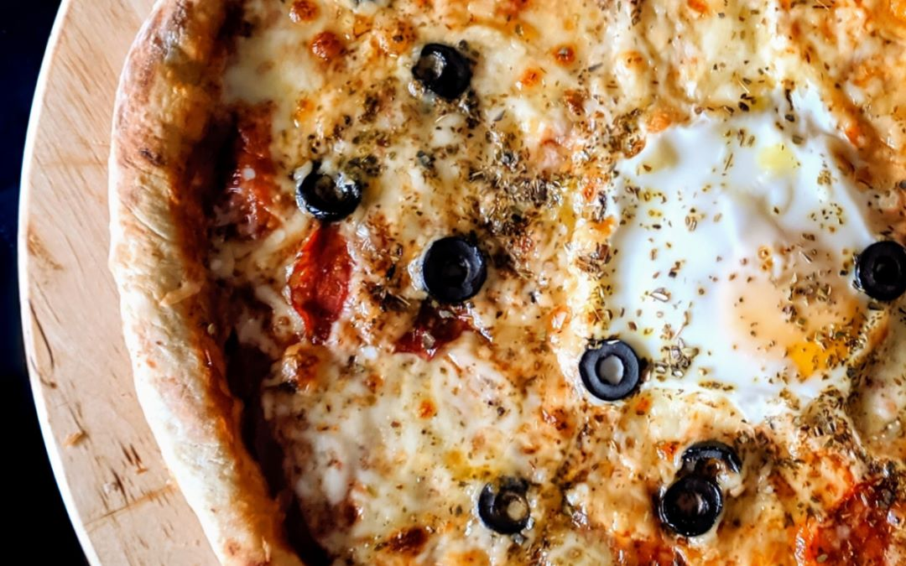

<html lang="en"></html>
<head>
    <meta charset="UTF-8">
    <meta name="viewport" content="width=device-width, initial-scale=1.0">
    <title>Pagina Web</title>
    <link rel="stylesheet" href="estilos1.css">
</head>

   

    <header>
    PIZZA SIN GLUTEN
    </header>
    
       
   
        <h4>Ingredientes </h4>
   <nav>
    <li>250 gramos de harina sin gluten del tipo que más nos guste </li>
    <li> 5 gramos de levadura</li>
    <li> 150 gramos de agua a temperatura ambiente </li>
    <li> 1 cucharada de aceite de oliva</li>
    <li>tomate natural triturado.</li>
    <li>mozzarella.</li>
    <li>aceitunas con o sin hueso envasadas sin aliño</li>
    <li>jamón curado</li>
    <li>huevo(s)</li>
</nav>
<body>
        <h5>Procedimiento para la masa</h5>
     <ol>
        <li> Precalentar el horno a 200oC.</li>
        <li> Mezclar todos los ingredientes en un bol hasta lograr la textura deseada.</li>
        <li> Espolvorear la encimera de la cocina con harina sin gluten y darle a la masa la forma
             que queremos.</li>
        <il>  Meter la masa para nuestra pizza sin gluten en el horno 5 minutos.</li>
    </ol>

    <h6>Procedimiento para la cobertura</h6>
    <ol>
        <li> Repartir con una cuchara el tomate triturado por la parte superior de la masa.</li>
        <li>Cortar la mozzarella y poner los trozos encima del tomate. </li>
        <li>Podemos cortar las aceitunas en trozos pequeños o dejarlas enteras. </li>
        <li> Abrir uno o dos huevos y ponerlos sobre la masa.</li>
        <li> Añadir el jamón en tiras</li>
        <li> Meter de nuevo en el horno la masa. Esta vez entre 5 y 10 minutos.</li>
    </ol>
    <div class="contenedor">
        
    </div>
<footer> <h7> healtheeat</h7></footer>
</body>
